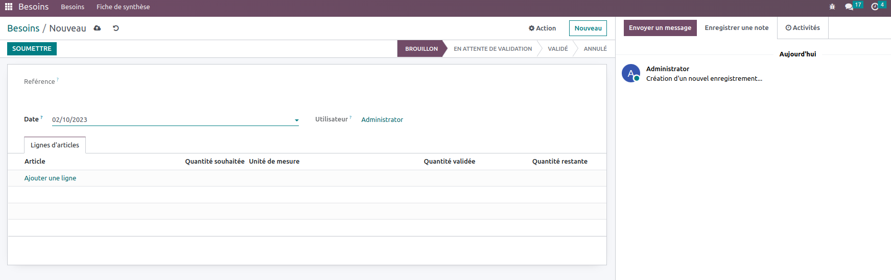
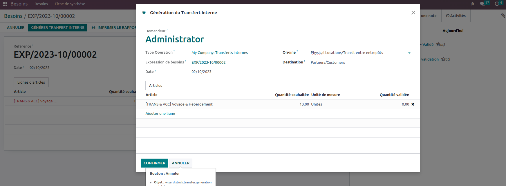

Main Features
-
Needs Submission

The "Needs Submission" functionality serves as a dedicated platform within our Odoo module, enabling employees to effortlessly submit their various requirements and requests. This feature streamlines the process of collecting valuable input from your workforce, allowing them to articulate their needs, whether they pertain to equipment, resources, or any other essential aspects of their roles. By offering a user-friendly interface, we empower employees to submit their requests efficiently, ensuring that nothing goes unnoticed. This feature not only enhances communication between employees and management but also fosters a culture of responsiveness, ultimately contributing to improved workplace satisfaction and productivity.
-
Requirement Record Validation
This feature provides a systematic approach to processing and validating employee-submitted requirement records. With this feature, you can follow unique workflows tailored to your organization's specific processes. This functionality allows you to establish a structured path to process a request to follow. You can ensure requests are routed to appropriate personnel for assessment, authorization and action. This not only streamlines decision-making, but also adds transparency and accountability to the claims processing process, contributing to more efficient and responsive operations within your organization.
-
Avoid Duplicate Products
This feature is crucial for maintaining data accuracy and ensuring efficient inventory and catalog management. By implementing this functionality, the system can intelligently detect and alert users when they attempt to add a product that already exists, thereby minimizing data redundancy and the risk of inconsistencies. This not only streamlines data entry processes but also enhances overall data quality, helping organizations maintain a clean and organized product catalog, which is essential for effective decision-making and operations.